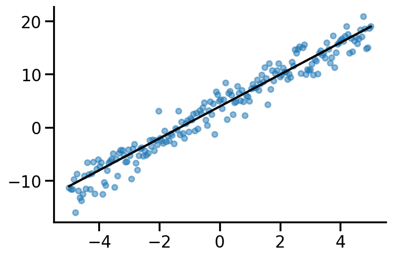
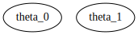
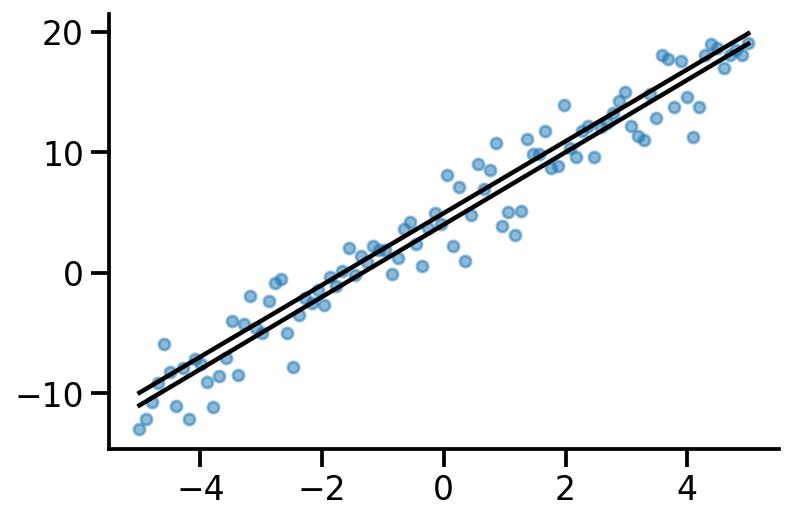
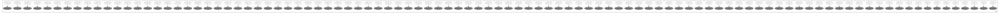
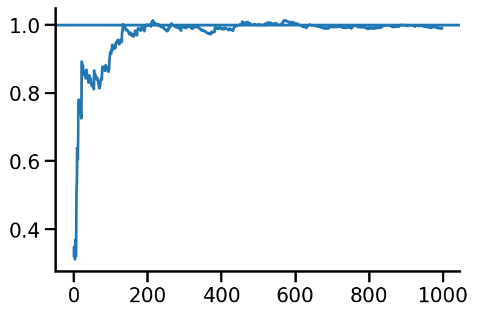

import numpy as np
import matplotlib.pyplot as plt
import torch
import seaborn as sns
import pandas as pd
t_dist =torch.distributions
sns.reset_defaults()
sns.set_context(context="talk", font_scale=1)
%matplotlib inline
%config InlineBackend.figure_format='retina'Basic Imports
Creating dataset
x = torch.linspace(-5, 5, 200)
true_y = 3*x + 4
observed_y = true_y+ 2*torch.randn(200)
plt.scatter(x, observed_y, s = 30, alpha=0.5)
plt.plot(x, true_y, color = 'k')
sns.despine()
MLE
import pyro
import pyro.distributions as dist
import pyro.distributions.constraints as constraints
pyro.clear_param_store()
def mle_model(x, y=None):
theta_0 = pyro.param("theta_0", torch.randn(1))
theta_1 = pyro.param("theta_1", torch.randn(1))
y_hat_mean = theta_0 + theta_1*x
with pyro.plate("data", len(x)):
return pyro.sample("obs", dist.Normal(y_hat_mean, 1), obs=y)
#pyro.render_model(mle_model, model_args=(x, observed_y))m = mle_model(x)
pyro.param("theta_0").item(), pyro.param("theta_1").item()(-0.100727379322052, 1.5172470808029175)for i in range(5):
plt.scatter(x, mle_model(x).detach(), s = 5, alpha = 0.4)
plt.plot(x, )
def guide(x, y):
# register the two variational parameters with Pyro.
pyro.sample("theta_0", dist.Normal(0., 1.))
pyro.sample("theta_1", dist.Normal(0., 1.))pyro.render_model(guide, model_args=(x, observed_y))
from pyro.optim import Adam
from pyro.infer import SVI, Trace_ELBO
adam_params = {"lr": 0.005, "betas": (0.90, 0.999)}
optimizer = Adam(adam_params)
# setup the inference algorithm
svi = SVI(mle_model, guide, optimizer, loss=Trace_ELBO())
n_steps = 5000
# do gradient steps
for step in range(n_steps):
svi.step(x, y)
if step%110==0:
print(pyro.param("theta_0").item(), pyro.param("theta_1").item())/Users/nipun/miniforge3/lib/python3.9/site-packages/pyro/util.py:288: UserWarning: Found non-auxiliary vars in guide but not model, consider marking these infer={'is_auxiliary': True}:
{'theta_1', 'theta_0'}
warnings.warn(ValueError: Error while computing log_prob at site 'obs':
Value is not broadcastable with batch_shape+event_shape: torch.Size([100]) vs torch.Size([200]).
Trace Shapes:
Param Sites:
theta_0 1
theta_1 1
Sample Sites:
obs dist 200 |
value 100 |x = torch.linspace(-5, 5, 100)
predicted_y = pyro.param("theta_1").item()*x + pyro.param("theta_0").item()
#observed_y = true_y+ 2*torch.randn(100)
plt.scatter(x, observed_y, s = 30, alpha=0.5)
plt.plot(x, predicted_y, color = 'k')
plt.plot(x, true_y, color = 'k')
sns.despine()
data_dim = 2
latent_dim = 1
num_datapoints = 100
z = dist.Normal(
loc=torch.zeros([latent_dim, num_datapoints]),
scale=torch.ones([latent_dim, num_datapoints]),)
w = dist.Normal(
loc=torch.zeros([data_dim, latent_dim]),
scale=5.0 * torch.ones([data_dim, latent_dim]),
)w_sample= w.sample()
z_sample = z.sample()
x = dist.Normal(loc = w_sample@z_sample, scale=2)
x_sample = x.sample([100])
plt.scatter(x_sample[:, 0], x_sample[:, 1], alpha=0.2, s=30)<matplotlib.collections.PathCollection at 0x135cdf700>
Generative model for PPCA in Pyro
import pyro.distributions as dist
import pyro.distributions.constraints as constraints
import pyro
pyro.clear_param_store()
def ppca_model(data, latent_dim):
N, data_dim = data.shape
W = pyro.param("W", torch.zeros((data_dim, latent_dim)))
#print(W.shape, data_dim, (data_dim, latent_dim))
for i in range(N):
z_vec = pyro.sample("z_{}".format(i), dist.Normal(loc = torch.zeros(latent_dim), scale = 1.))
#print(W.shape, z.shape, W@z)
pyro.sample(fr"\$x_{i}\$", dist.Normal(W@z_vec, 2.), obs=data[i])
pyro.render_model(ppca_model, model_args=(torch.randn(150, 3), 1))pyro.clear_param_store()
def ppca_model2(data, latent_dim):
N, data_dim = data.shape
W = pyro.param("W", torch.zeros((data_dim, latent_dim)))
#print(W.shape, data_dim, (data_dim, latent_dim))
z_vec = pyro.sample("z", dist.Normal(loc = torch.zeros([latent_dim, N]), scale = 1.))
print(W.shape, z_vec.shape, (W@z_vec).t().shape, data.shape)
return pyro.sample("obs", (W@z_vec).t(), obs=data)
pyro.render_model(ppca_model2, model_args=(torch.randn(150, 3), 1))torch.Size([3, 1]) torch.Size([1, 150]) torch.Size([150, 3]) torch.Size([150, 3])AttributeError: 'ProvenanceTensor' object has no attribute 'log_prob'dist.Normal(loc = torch.tensor([0.]), scale = 1.).sample()tensor([-1.2529])pyro.clear_param_store()
D = 2
d = 1
data = torch.zeros(100, D)
def ppca(data):
A = pyro.param("A", torch.zeros((D, d)))
mu = pyro.param("mu", torch.zeros(D))
for i in pyro.plate("data", len(data)):
z = pyro.sample("latent_{}".format(i), dist.Normal(torch.zeros(d), 1.0).to_event(1))
pyro.sample("observed_{}".format(i), dist.Normal(A @ z + mu, 1.0).to_event(1), obs=data[i])
pyro.render_model(ppca, model_kwargs={'data':data})
ppca(data)data.shapetorch.Size([100, 2])N = 1000
x = np.random.normal(loc = 5, scale = 1., size = N)o = {}
for i in range(N-2):
o[i] = x[:i+2].std()pd.Series(o).plot()
plt.axhline(y=1)
sns.despine()
x2 = np.array(list(o.values()))o2 = {}
for i in range(N-3):
o2[i] = x2[:i+2].std()pd.Series(o2).plot()<AxesSubplot:>